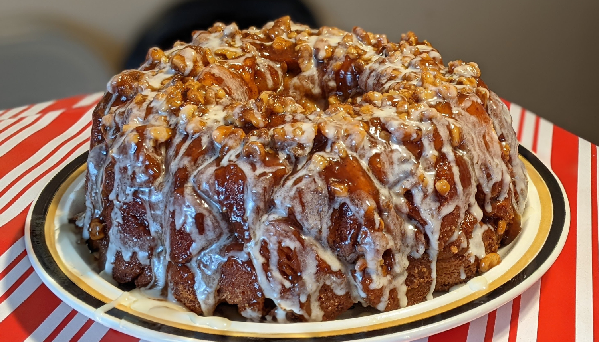

Monkey Bread

Author: Derek and McKenzie Nichols |
Cooked: December 25, 2023
Yields: 8 Servings | Prep Time: 15 Minutes | Cook Time: 60 Minutes
Ingredients
- 2 cans refrigerated biscuits
- 1 can refrigerated cinnamon rolls (non-Grands)
- 1 c. unsalted butter, melted
- 1 1/3 c. light brown sugar
- 1 tsp vanilla extract
- 1 1/4 tsp vanilla bean paste, divided
- 1 1/3 c. fresh chopped pecans
- 3/4 c. sugar
- 1 1/2 tsp cinnamon
Directions
- Preheat the oven to 350°F.
- Pop all the biscuit/roll tubes open and cut each one into 4 pieces.
- In a microwave safe bowl, melt the two sticks of butter. Whisk in the brown sugar, vanilla extract, and 1 tsp of vanilla bean paste. Stir in the chopped pecans.
- Add 1/3 of the wet mixture to the bottom of a bundt pan.
- In a large Ziploc bag, add the sugar and cinnamon and shake to combine.
- Add half of the cut biscuits (half of each type of biscuit for even distribution) to the sugar and shake to evenly coat all biscuits.
- Add the coated biscuits to the bunt pan, top with 1/2 the remaining wet mixture, and repeat the process with the remaining biscuits topping with the remaining wet mixture.
- Bake the monkey bread at 350°F for 30 minutes with a pan on the rack underneath to catch any drippings. Then top with foil and bake for another 20 minutes. Bake for additional 5 minute increments until the top layer shows that it's cooked (60 total minutes looked just right).
- Remove pan from oven and allow to cool for 5 minutes. Invert the pan onto a serving plate and top with the cinnamon roll icing mixed with 1/4 tsp of vanilla bean paste.
Additional Notes
- The cinnamon sugar mixture might not look like enough, but it is!